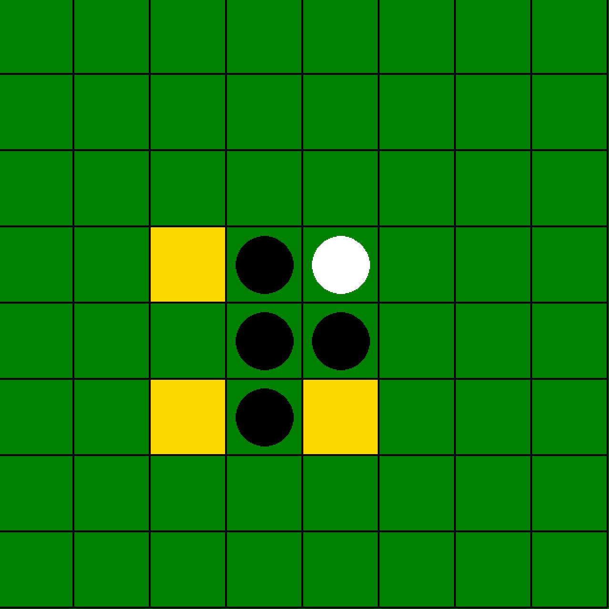
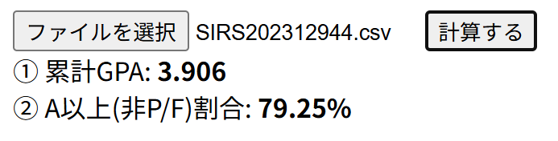
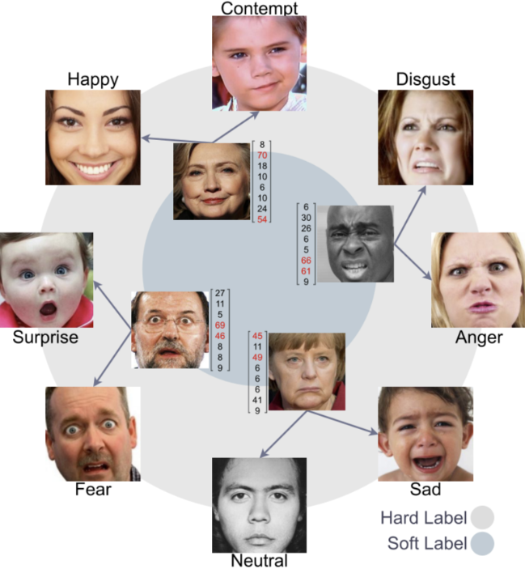
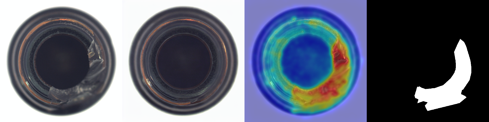

こんにちは、私は
画像処理・コンピュータビジョンに情熱を持つ学生エンジニアです。深層学習を活用した画像認識・生成システムの開発に取り組んでいます。
お問い合わせ筑波大学情報学群情報科学類に在学中の3年生です。画像処理・コンピュータビジョンに興味を持ち、深層学習を用いた研究・開発に取り組んでいます。
PyTorchやOpenCVを使った画像認識・物体検出・生成モデルの実装経験があります。学術的な知識と実装力を兼ね備えたエンジニアを目指しています。



AffectNet と OpenFace の Action Unit 出力を活用し、SD2.1 + ControlNet + LoRA で顔の同一性を保ちながら表情のみを編集するシステム。ResNet18 の蒸留による AU 推定モデルも実装。

MVTec-AD を対象に GLAD / EfficientAD / PUAD の3手法を5カテゴリ（bottle / cable / capsule / pill / grid）で比較した実験リポジトリ。Colab 上での再現・依存関係修正・評価指標の統一・可視化・考察まで含む。
AWS Neptune Analytics を用いた Graph RAG ベースの情報検索デモアプリを開発。グラフ構造を活用した検索の仕組みを理解しながら、LLM・検索基盤・クラウドサービスを組み合わせたシステム開発を経験。
画像処理・機械学習領域の実務インターンとして、コルクのAI異常検知システム開発（調査・モデル改善・評価・発表）と、衛星データを用いたデータセンター候補地推薦システム開発に従事。仮説立案から改善・検証まで継続的に取り組みました。
コンピュータサイエンスを専攻。画像処理・コンピュータビジョンに関する研究を行っている。
お気軽にご連絡ください。インターンシップや就職に関するご相談もお待ちしております。